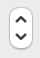
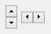
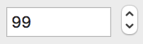
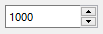

Spin Control
A spin control is a pair of arrow buttons that the user can click to increment or decrement a value, such as a scroll position or a number displayed in a companion edit control control. There are two basic types of spin controls: the so called single spin control and the edit spin control.
A single spin control functions as a sort of simplified scroll bar. It can be positioned anywhere in a dialog and used whenever needed to provide a scrolling input. On Windows, when you create a single spin control, DG automatically determines its orientation according to the specified horizontal and vertical sizes. If the horizontal size is greater than the vertical one DG creates a horizontal spin control. In the opposite case DG creates a vertical spin control. On Macintosh, only vertical single spin controls are supported.
An edit spin control is always associated with an edit control of integer or positive integer type. The edit spin control and the edit control can be associated with each other only when they are created. The edit spin control must be just after its companion edit control in the dialog item list and it must be positioned next to the right of the edit control. On Windows, DG closes up these controls so that they look like a single control that is sometimes referred to as a spinner control. Edit spin controls always have vertical orientation. Clicking the up or down arrows increments or decrements the values of both controls. On Windows, when the companion edit control has the keyboard focus, the value of the controls can be modified not only by mouse clicks but by pressing the up or down arrow keys as well.
The value associated with a spin control is called its current position. A spin control also has a range that is a set of continuous values that the spin control can represent. Because these values are expressed as short integers, the possible minimum and maximum values are SHRT_MIN and SHRT_MAX, respectively. This implies that the range of the integer-type edit control must also be restricted to short values.
Item type
- DG_ITM_SPINCONTROL
Subtypes
-
Subtype Meaning DG_ST_SINGLESPIN Independent spin control.
 
DG_ST_EDITSPIN Spin control associated with an edit control of integer or positive integer type.
 
GRC Specification
SingleSpin x y dx dy min max
EditSpin x y dx dy editID
where x and y are the pixel coordinates of the upper left corner of the spin control, dx and dy are the width and height of the control in pixels. min and max specifies the initial range of the single spin control. editID is the dialog item identifier of the edit control associated with the edit spin control. The edit control's type must be integer or positive integer (DG_ET_INT or DG_ET_POSINT) and editID must be one less than the ID of the edit spin control.
Messages
-
Message Meaning DG_MSG_CHANGE The value of the single spin control is changed. The message data parameter contains the previous value. This message is sent to single spin controls only. DG_MSG_TRACK The value of the single spin control is changed during tracking. The message data parameter is the sub-message. This message is sent to single spin controls only.
Modification Flag
DGSetItemValLong, DGSetItemMinLong and DGSetItemMaxLong functions can set the spin control's modification flag except they are called when handling the DG_MSG_INIT message in the dialog callback function. The flag can also be set by user actions that generate DG_MSG_CHANGE or DG_MSG_TRACK messages. Use DGModified or DGResetModified to retrieve or reset (clear) the state of the modification flag.
Remarks
When a single spin control is created its range is specified in GRC. However, the range of an edit spin control is initialized according to the analogous values of the companion edit control. Later you can dynamically alter the range by using the DGSetItemMinLong and DGSetItemMaxLong functions. The possible minimum of the range is SHRT_MIN while the maximum is SHRT_MAX. Of course, in case of an edit spin control with a positive integer type edit control the possible minimum value is zero. Use DGGetItemMinLong and DGGetItemMaxLong to retrieve the range of a spin control. The current value of the spin control can be set and retrieved by DGSetItemValLong and DGGetItemValLong, respectively.
If either of the range or value setting functions is called, DG checks the consistency of data (i.e. whether the minimum <= value <= maximum condition is true or not). If data are inconsistent, DG automatically adjusts them. For the details of this adjustment see DGSetItemValLong, DGSetItemMinLong and DGSetItemMaxLong.
If the user clicks and holds down the (left) mouse button on one of the arrows of a single spin control, DG sends DG_MSG_TRACK messages to the dialog callback function until the user releases the (left) mouse button. With DG_MSG_TRACK message, a sub-message will be delivered also, which specifies the spin control event more detailed. This allows the application to modify other controls during tracking. When handling DG_MSG_TRACK messages call DGGetItemValLong to retrieve the current value of the spin control. As soon as the user releases the (left) mouse button the callback function receives a DG_MSG_CHANGE message; the message data parameter is the value of the control before tracking. Note that every DG_MSG_CHANGE message is preceded by at least one DG_MSG_TRACK message.
The range and the value of an edit spin control and its companion edit control are synchronized automatically by DG every time when you call one of the DGSetItemValLong, DGSetItemMinLong or DGSetItemMaxLong functions on either of the controls. Note that an edit spin control does not receive DG_MSG_CHANGE messages, they are sent to the companion edit control instead.
Requirements
- Version: DG 2.0.0 or later
- Header: DG.h
See Also
Dialog item types, Edit Control
DGGetItemMaxLong, DGGetItemMinLong, DGGetItemValLong, DGModified, DGResetModified, DGSetItemMaxLong, DGSetItemMinLong, DGSetItemValLong, Callback functions
DG_MSG_CHANGE, DG_MSG_INIT, DG_MSG_TRACK